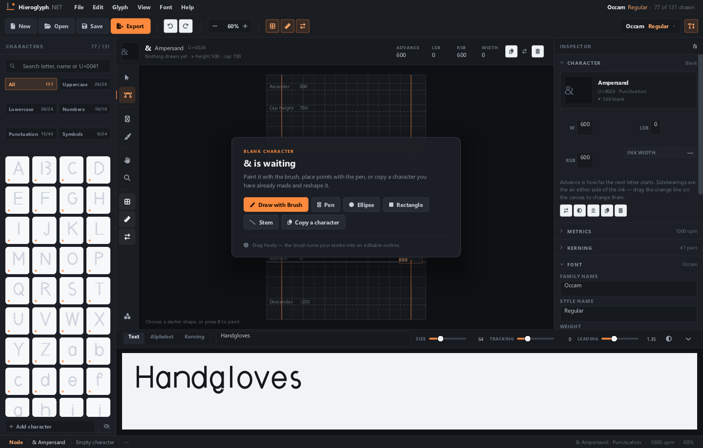
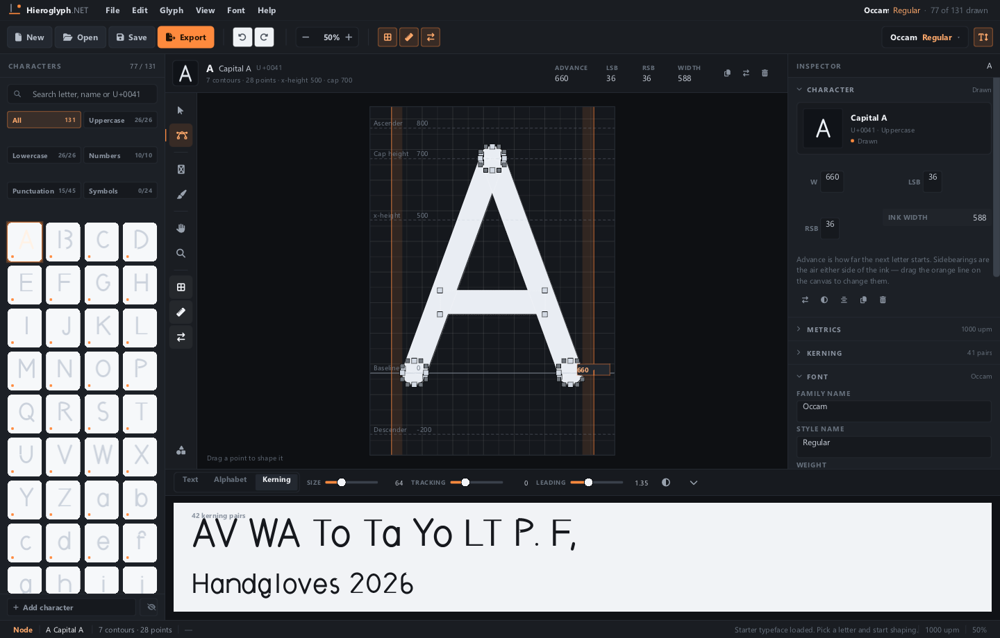
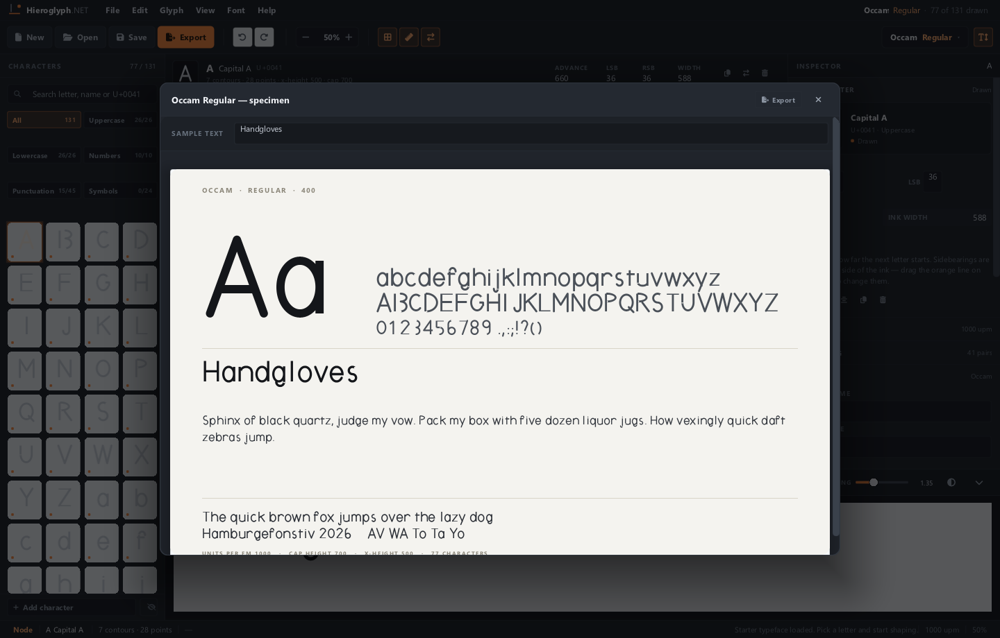
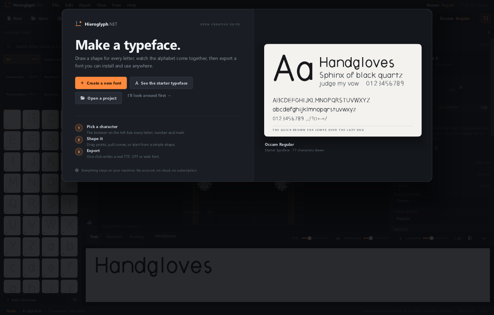

Free typeface design · Windows, Linux, macOS
Design a typeface. Export a real font.
Draw a shape for every letter, watch the alphabet come together, then export a TTF, OTF, WOFF or WOFF2 file you can install and use anywhere — without an account, a subscription or a font-engineering degree.
Everything runs locally. Your fonts never leave your computer.

Drawing should feel like drawing
Hieroglyph is built around one loop: pick a character, shape it, see the alphabet, export. The editor stays out of the way, and every visible control is a real one.
Brush and pen
Drag freely with the brush and the stroke becomes one smooth, editable outline. Place precise cubic curves with the pen when you want control over every handle.
Guides that mean something
Baseline, x-height, cap height, ascender and descender are drawn on the canvas, with sidebearing shading and a draggable advance width.
See it while you work
A preview dock renders your developing typeface as you type, with size, tracking, leading and a paper or charcoal ground.
A look around






What you can do
| I want to… | Hieroglyph can |
|---|---|
| Make my first font | Start from the included Occam typeface, or from a blank sheet with every standard character ready. |
| Draw a letter quickly | Drag with the brush (B) and reshape the resulting outline point by point. |
| Control the curve | Use the pen (P) and node tool (A) with mirrored Bézier handles. |
| Keep spacing consistent | Set advance width and sidebearings, drag the orange advance line, or centre the outline automatically. |
| Turn a capital into a lowercase | Copy a character to another code point and reshape it independently. |
| Add é, £, € or an arrow | Add any Unicode character by typing it or its code point. |
| Fix awkward pairs | Adjust kerning for AV, WA, To, Ta and any pair you choose, with a live visual preview. |
| Check the whole typeface | Use the alphabet, text and kerning previews, or open the specimen viewer. |
| Ship it | Export TTF, OTF, WOFF or WOFF2, then install it on Windows with one click. |
Get started
- Run it. Download a release for your platform, or run
dotnet runfrom a checkout with the .NET 10 SDK. - Create a font. Choose File → New Font… and give it a family name. Pick “Starter outlines” if you would like a complete alphabet to reshape.
- Pick a character. Click any tile in the browser on the left. The dot shows whether it is drawn.
- Draw it. Press B and drag, or press P and click to place points. Drag the first point onto itself to close a pen contour.
- Shape it. Press A and drag anchors or handles. Shift-drag constrains to one axis; the arrows nudge by 10 units.
- Preview and export. Watch the alphabet fill in at the bottom, then press Ctrl+E to export.

Keyboard shortcuts
| Action | Shortcut |
|---|---|
| Selection / Node / Pen / Brush | V / A / P / B |
| Hand / Zoom | H / Z |
| Previous / next character | [ / ] or PageUp / PageDown |
| Undo / redo | Ctrl+Z / Ctrl+Y |
| Copy / paste a character | Ctrl+C / Ctrl+V |
| Copy to another character | Ctrl+D |
| Select every point | Ctrl+A |
| Delete selected points | Delete |
| Nudge (×1 with Shift) | Arrow keys |
| Fit / zoom in / zoom out | Ctrl+0 / Ctrl+= / Ctrl+- |
| New font / open / save / export | Ctrl+N / O / S / E |
| Pan | Middle-drag, or H and drag |
Free, open and private
Hieroglyph is free software. There is no paid tier, no subscription, no account, no advertising and no telemetry. Your project and your exported fonts stay on your computer. The fonts you make are yours to use, sell or give away.
Every feature included
Brush, pen, kerning, previews, specimens and every export format, with no feature gates.
Real font files
TrueType outlines, CFF charstrings, kerning tables and web-font containers, written from your outlines.
Yours to keep
Projects are plain .hgl JSON files and exports are ordinary fonts. No lock-in.
Run from source
You need the .NET 10 SDK.
dotnet runThe desktop host opens a window. The source layout is described in the repository README.